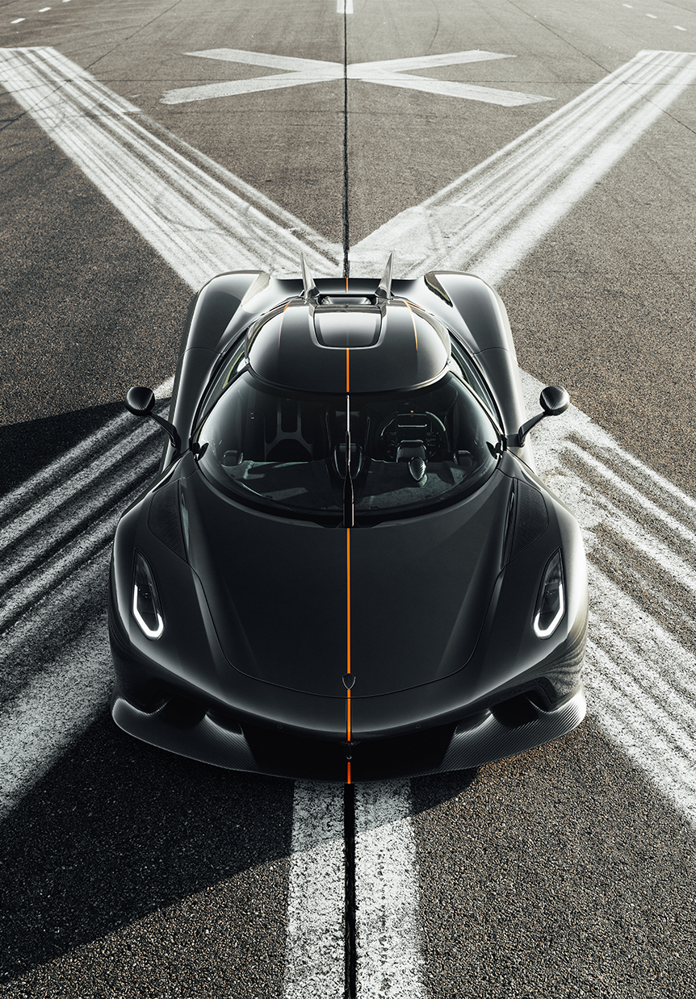

<!DOCTYPE html>
<html lang="hu">
<head>
    <meta charset="UTF-8">
    <meta name="viewport" content="width=device-width, initial-scale=1.0">
    <title>Koenigsegg Jesko - Attack és Absolut</title>
    <link rel="stylesheet" href="styles.css">
</head>
<body>
    
</body>
</html>
<body>
    <header>
        <nav>
            <ul>
                <li><a href="index.html">Kezdőlap</a></li>
                <li><a href="variánsok.html" class="active">Jesko Attack és Absolut</a></li>
                <li><a href="tervezesestechnologia.html">Tervezés és Technológia</a></li>
            </ul>
        </nav>
    </header>
    <main>
        <h1>Jesko Attack és Absolut: Két Változat, Egy Legenda</h1>
        <p>A Koenigsegg Jesko két különböző változatban érhető el, amelyek különböző vezetési élményeket kínálnak. Az Attack a pályaversenyzésre optimalizált, míg az Absolut a végsebesség rekordok megdöntésére készült.</p>
        
        <h2>Jesko Attack</h2>
        <p>Az Attack változat hatalmas hátsó szárnnyal és fejlett aerodinamikával rendelkezik, amely akár 1400 kg leszorítóerőt is képes generálni nagy sebességnél. Ez az autó ideális választás azoknak, akik a kanyarokban szeretnének maximális tapadást.</p>
        
        <h2>Jesko Absolut</h2>
        <p>Az Absolut változat a sebesség királya. A hátsó szárny helyett áramvonalas uszonyokkal rendelkezik, amelyek csökkentik a légellenállást (Cd=0.278). Ez a verzió a valaha gyártott leggyorsabb Koenigsegg lehet.</p>

        <h2>Összehasonlító Táblázat</h2>
        <table>
            <tr>
                <th>Jellemző</th>
                <th>Jesko Attack</th>
                <th>Jesko Absolut</th>
            </tr>
            <tr>
                <td>Leszorítóerő</td>
                <td>1400 kg (max)</td>
                <td>150 kg</td>
            </tr>
            <tr>
                <td>Légellenállási együttható</td>
                <td>0.33 Cd</td>
                <td>0.278 Cd</td>
            </tr>
            <tr>
                <td>Hátsó szárny</td>
                <td>Nagy, dupla profilú</td>
                <td>Uszonyok</td>
            </tr>
            <tr>
                <td>Cél</td>
                <td>Pályaversenyzés</td>
                <td>Végsebesség</td>
            </tr>
        </table>

        <h2>Képek</h2>
        <div class="gallery">
            
            
        </div>

        <h2>További Információ</h2>
        <p>Olvass részletes tesztet a Jesko-ról: <a href="https://www.caranddriver.com/koenigsegg/jesko" target="_blank">Car and Driver</a>.</p>
    </main>
</body>
</html>